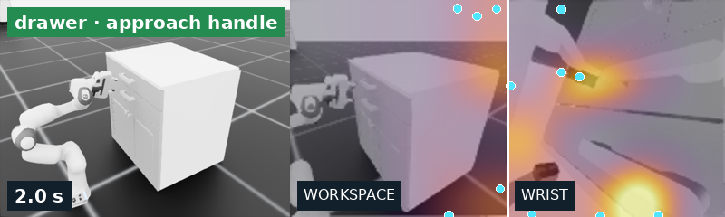
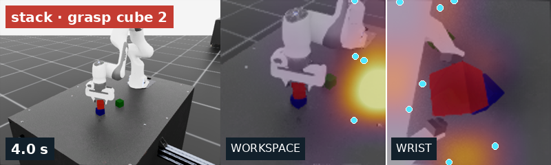
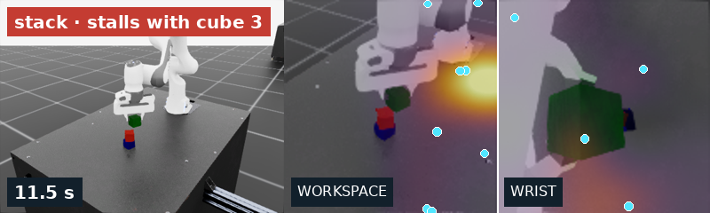

Franka drawer opening
Panda, 8-D actions, 8 s at 30 HzDiffusion policy, scripted-teacher demos, teacher itself 90.5 %92.2 %
Same recipe, scripted IK teacher instead of PPO.
Smoother teacher actions: the PPO teacher is bang-bang.
Drawer student matches its teacher on 600 fresh episodes.
Stacking student: 63 % never complete the first stack.


